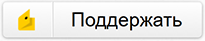

Русификатор Big Pharma
На этой странице Вы можете найти русификатор для игры "Big Pharma" от Twice Circled. Перевод сделан и публикуется с официального разрешения разработчика.
Установка русификатора
Установка осуществляется путем добавления файлов с переводом в директорию с данными игры.- Скачать архив по ссылке справа, и распаковать его.
- Запустить скрипт "install_win.cmd". Если скрипт не отработал - можно самостоятельно скопировать файлы drugNames-ru.data, names-ru.data, strings-ru.data в директорию с игровыми данными "[путь_до_библиотеки]\steamapps\common\Big Pharma\Big Pharma_Data\GameData\", где [путь_до_библиотеки] - путь до библиотеки, в которую установлена Big Pharma. На платформах, отличных от Windows необходимо действовать похожим образом.
- В настройках игры выбрать русский язык.
- Играть с наслаждением=)
Поддержка проекта
Русификатор распространяется на бесплатной основе, но Вы можете поддержать автора проекта - это ускорит процесс, и станет стимулом к развитию и поддержке этого и других свободных проектов автора. 
Обратная связь
Вопросы и предложения по переводу можно присылать по следующему адресу: open.proj@yandex.ru
Прогресс перевода
В данном разделе представлена история обновлений (снизу вверх) и прогресс перевода. Финальной версии перевода будет назначена версия 1.0.
- Версия перевода 0.02: переведён стартовый экран, названия конкурентов, сообщения об игровых ошибках. Названия ингридиентов переведены, но в игре их названия выглядят нелепо, т.к. собираются из нескольких частей, и не учитывают семантику русского языка.